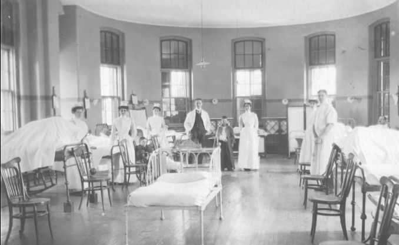
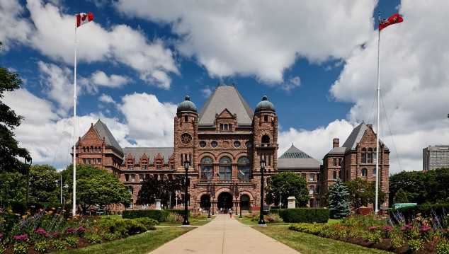
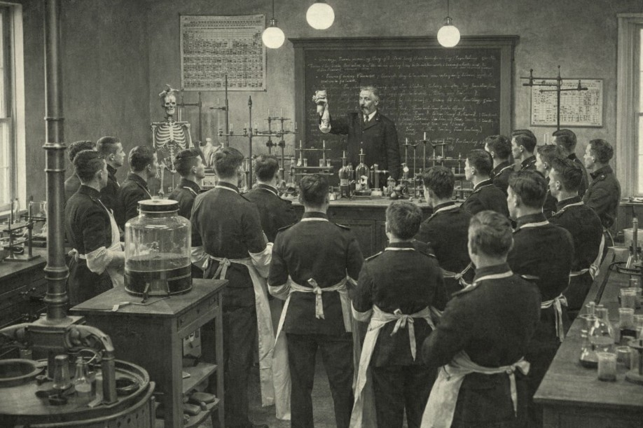
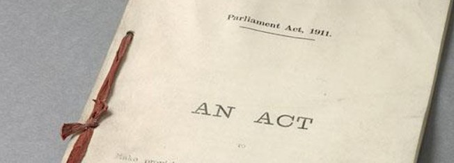
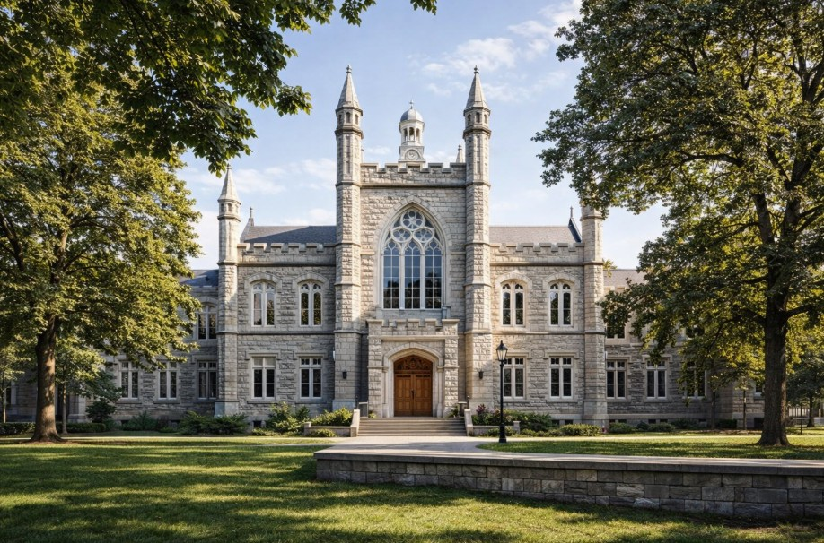
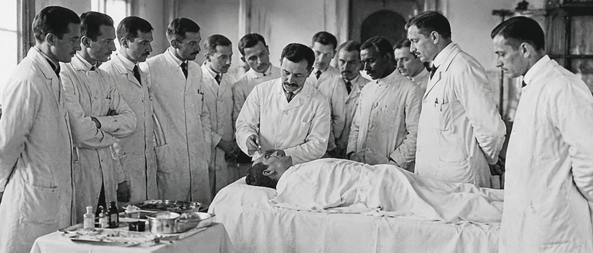
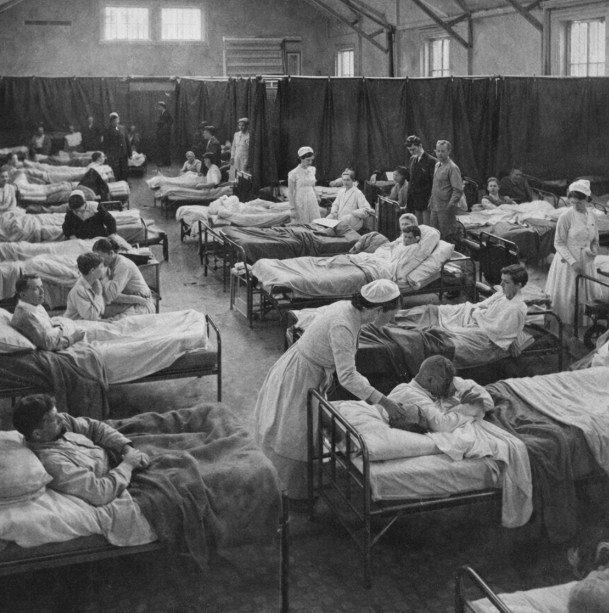
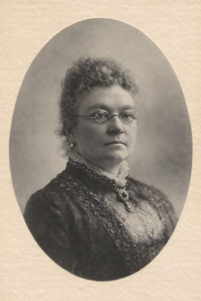
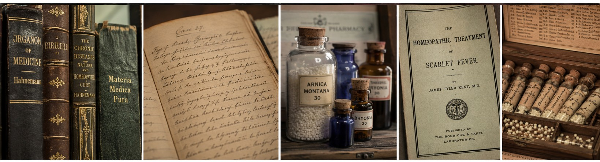
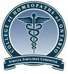

Homeopathy has a long and influential history in Canada, beginning in the mid‑19th century and continuing to evolve into a regulated profession in modern times.

1845 – Homeopathy first arrived in Canada when Dr. J.O. Rosenstein, a Dutch immigrant, settled in Montreal.
Ontario became the first province to regulate the practice of homeopathy. Dr. James Lillie and Dr. Joseph Lancaster introduced homeopathy to Ontario.
1854 – The Homeopathic Medical Society of Canada was established to give homeopaths legal rights to practice.
1859 – “An Act Respecting Homeopathy” was formed to set standards for Homeopathy, including the requirement to complete a 3‑year Homeopathy program.
1869 – The College of Physicians and Surgeons of Ontario (CPSO) was established and included Homeopaths, Eclectics and Regular Physicians. Homeopathy remained regulated under CPSO from 1869 – 1974.
1884 – An estimated 80 homeopaths were practicing Homeopathy in Canada.
1890 – The Toronto Homeopathic Hospital opened at Richmond and Duncan Streets.
Emily Stowe, Canada's first female physician to publicly practise medicine in Ontario, publicly practiced homeopathic medicine.
1992 – The first homeopathic practitioner program in Canada was introduced by the International Academy of Homeopathy (IAH) and the Toronto Homeopathic Hospital.
2015 – The practice of Homeopathy became officially regulated in Ontario by the College of Homeopaths (CHO) on April 1, 2015, under the Regulated Health Professionals Act (RHPA).